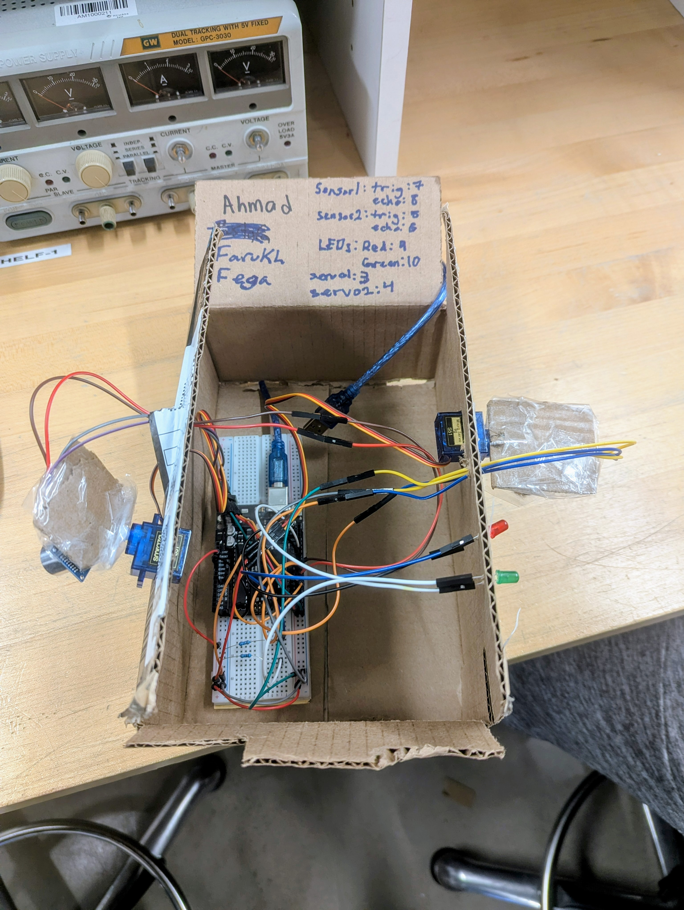

Circuit Diagram
The ultrasonic sensor measures distance; the Arduino activates the red or green LED according to distance of whatever is approaching.

Course: TECH 117 (Computer Engineering Technology, Fall 2025)
Instructor: Ph.D. Ana Rodrigues
Team Members:
This project uses an Arduino Uno, an HC-SR04 ultrasonic sensor, a servo motor, and red/green LEDs to provide alerts based on where a person/object is, similar to Radio Detection And Ranging (RADAR) systems.
The ultrasonic sensor measures distance; the Arduino activates the red or green LED according to distance of whatever is approaching.
| Item | Qty | Unit Price (CAD) | Subtotal (CAD) | Source |
|---|---|---|---|---|
| Arduino Uno R3 | 1 | $41.14 | $41.14 | DigiKey |
| HC-SR04 Ultrasonic Sensor | 1 | $11.42 | $11.42 | Amazon |
| Breadboard | 1 | $12.31 | $12.31 | DigiKey |
| LEDs (Red and Green in a pack) | 1 | $11.99 | $11.99 | Walmart |
| 330 Ω Resistors (Pack) | 1 | $9.11 | $9.11 | Amazon |
| Micro Servo (Motor) | 2 | $5.40 | $10.80 | DigiKey |
| Jumper Wires (M-to-M) | 1 set | $2.91 | $2.91 | DigiKey |
| Jumper Wires (M-to-F) | 1 set | $2.91 | $2.91 | DigiKey |
| USB Cable (A to B) | 1 | $3.73 | $3.73 | DigiKey |
| Estimated Total | $106.32 | — | ||
The following image shows the assembled prototype on a breadboard.
The following Arduino code controls the system, lighting LEDs and activating the buzzer based on distance readings from the HC-SR04 sensor.
// Radar System with Distance Sensor (HC-SR04)
// Author(s): Farukh Kahloon, Oghenefega Ayigbe, Ahmad Alatia
// Nov 26, 2025
// Object is farther than 30cm: Green LED lights up
// Object is closer than 30cm: Red LED lights up
#include // Include the Servo library to control servo motors
const int trigPin1 = 7; // Trigger pin for ultrasonic sensor 1
const int echoPin1 = 8; // Echo pin for ultrasonic sensor 1
const int trigPin2 = 5; // Trigger pin for ultrasonic sensor 2
const int echoPin2 = 6; // Echo pin for ultrasonic sensor 2
const int ledRedPin = 9; // Pin for red LED
const int ledGreenPin = 10; // Pin for green LED
long duration; // Variable to store time of ultrasonic pulse
int distance1; // Distance measured by sensor 1
int distance2; // Distance measured by sensor 2
Servo myServo; // Create servo object for servo on pin 4
Servo myServo1; // Create second servo object for servo on pin 3
void setup() {
pinMode(trigPin1, OUTPUT); // Set sensor 1 trigger pin as output
pinMode(echoPin1, INPUT); // Set sensor 1 echo pin as input
pinMode(trigPin2, OUTPUT); // Set sensor 2 trigger pin as output
pinMode(echoPin2, INPUT); // Set sensor 2 echo pin as input
pinMode(ledRedPin, OUTPUT); // Set red LED pin as output
pinMode(ledGreenPin, OUTPUT); // Set green LED pin as output
Serial.begin(9600); // Start serial communication at 9600 baud
myServo.attach(4); // Attach first servo to pin 4
myServo1.attach(3); // Attach second servo to pin 3
}
void loop() {
// Sweep both servos from 15° to 165°
for(int i = 15; i <= 165; i++){
myServo.write(i); // Move servo 1 to angle i
myServo1.write(i); // Move servo 2 to angle i
delay(30); // Wait 30 ms for servo movement
// Measure distance from sensor 1
distance1 = calculateDistance(trigPin1, echoPin1);
Serial.print(i); // Print servo angle
Serial.print(" distance 1 = ");
Serial.print(distance1); // Print sensor 1 distance
Serial.println("."); // Data separator
delay(50); //delay in between the sensors
// Measure distance from sensor 2
distance2 = calculateDistance(trigPin2, echoPin2);
Serial.print(i); // Print servo angle again
Serial.print(" distance 2 = ");
Serial.print(distance2); // Print sensor 2 distance
Serial.println("."); // Data separator
// LED warning logic for sensor 1
if(distance1 < 30 || distance2 < 30){ // If sensor 1 detects object < 30 cm
digitalWrite(ledRedPin, HIGH); // Turn ON red LED
digitalWrite(ledGreenPin, LOW); // Turn OFF green LED
} else {
digitalWrite(ledRedPin, LOW); // Normal condition, red OFF
digitalWrite(ledGreenPin, HIGH); // Green ON
}
}
delay(1000); // Wait 1 second before next full sweep
}
int calculateDistance(int t, int e){
digitalWrite(t, LOW); // Ensure trigger is LOW
delayMicroseconds(2); // Wait 2 microseconds
digitalWrite(t, HIGH); // Send ultrasonic pulse
delayMicroseconds(10); // Pulse lasts 10 microseconds
digitalWrite(t, LOW); // Stop pulse
duration = pulseIn(e, HIGH); // Measure time for echo to return
int distance = duration * 0.034 / 2; // Convert time to distance in cm
return distance; // Return the measured distance
}
The system effectively demonstrates distance-based sensing using Arduino. It’s affordable, educational, and sustainable through reusable components.
The following external resources and example projects demonstrate related Arduino applications using ultrasonic distance sensors, micro servo (motor), and multicolour LEDs: